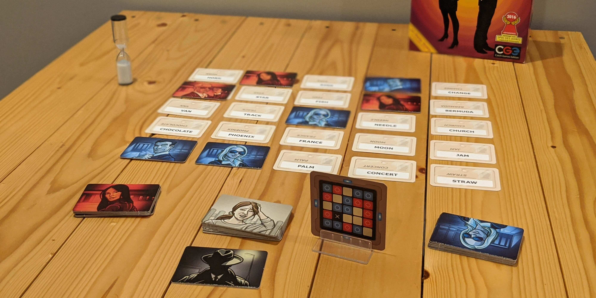
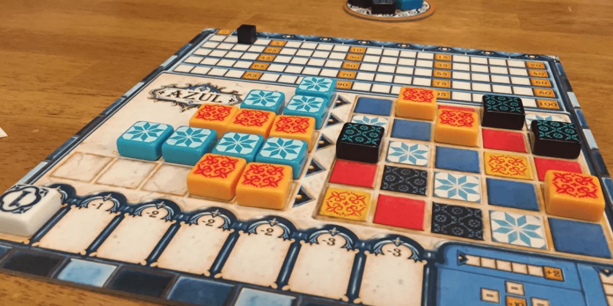
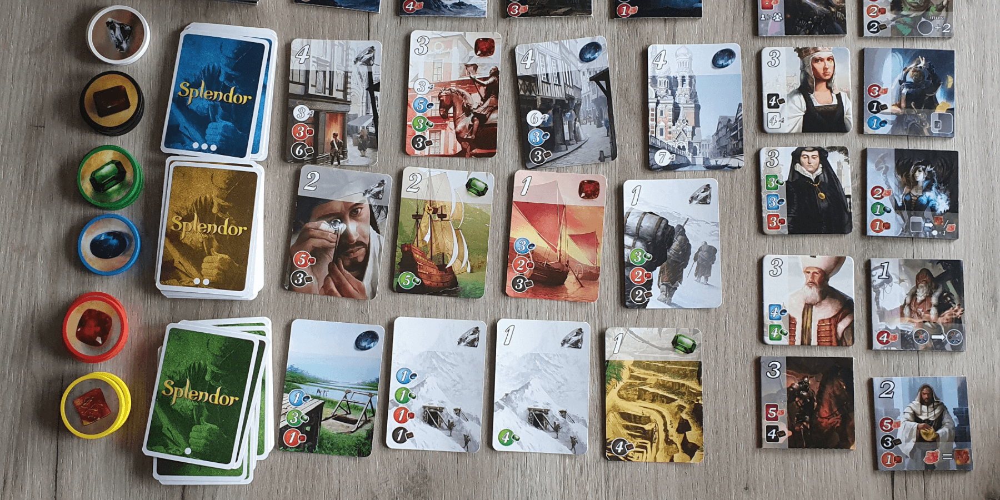
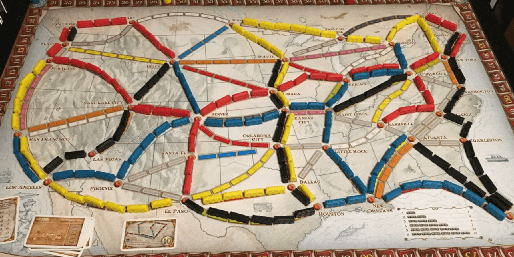
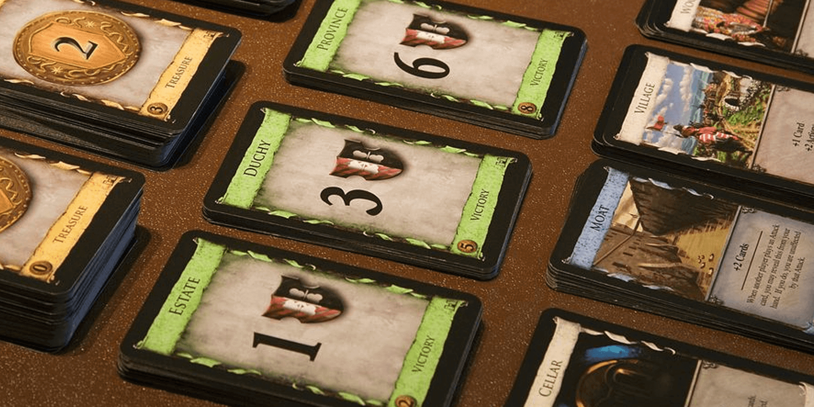
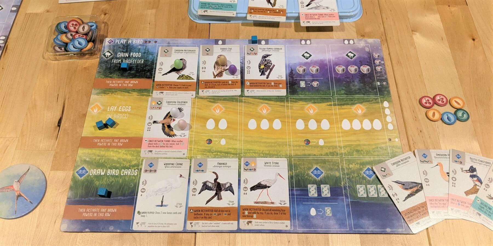
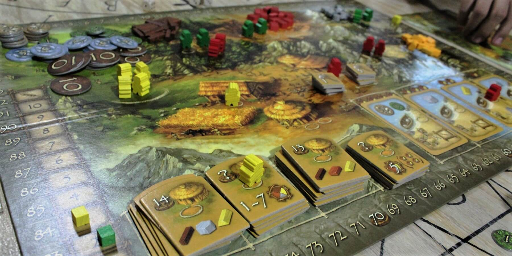

17 of the Best Gateway Games for New Players


We consider a gateway game to be easy to play, easy to teach, and exciting enough that a newer player will want to play more board games after.
Many board games qualify as great introductory games, so it really depends on your group's preferences. If you haven't played many modern board games or you're trying to introduce friends to the hobby, this list should be a good starting point!
Less Complex
These games are very quick to set up and play. Learning and teaching the rules is straightforward.1. Point Salad


Point Salad is a simple card game where you collect veggie cards to score points at the end of the game. Your veggies will be worth varying amounts of points based on which scoring cards you also pick up. Some point cards will give you 2 points per Cabbage but -1 point per Carrot, while another may give 10 points per set of Cabbage, Tomato, and Lettuce.
Each turn, you must take either 2 veggie cards OR 1 point card - the challenge comes in trying to find the right balance! This game is highly replayable, and you and your opponents will get to try out different strategies each game.
Buy Point Salad on Amazon
2. Hanabi
Hanabi is a cooperative card game where you work together to launch off colored fireworks in the correct order. The twist in this game is that you hold your hand facing away from you, so you can't see your own cards! Instead, you'll need to give clues to your teammates so they can play the right card from their hand.
To make things even harder, you may only provide a clue about the color or number of someone's cards ("These 2 cards are green" OR "This card is a 5"), so you'll need to give clues strategically. This is a tough game, but it's possible to win and play all 25 fireworks in ascending order by working as a team.
Buy Hanabi on Amazon
3. Coup

Coup is a simple game of deception in which you need to bluff your way to victory. Players are dealt 2 random cards that have secret roles with special abilities. On your turn, you can claim to be any role, even if you don't have that card! For instance, you can claim to be the Duke to take 3 coins, but someone can challenge you. If you lied, you lose one of your cards. If you were telling the truth, the challenger loses a card!
Once a player loses both of their cards, they're out of the game. The last player remaining wins. This game is great for groups of 4 to 6, and it's quick to learn and get started. We've been playing this game for years, and it has not gotten old!
Buy Coup on Amazon
4. Drop It

Drop It is sort of like Connect 4 mixed with chaos. You'll be dropping different shaped pieces into a vertical board, but there are no tracks to guide your piece down. Instead, your piece will fall and bounce off other pieces until it stops. You score points based on where your piece lands, and you can even score more points if your piece is touching a bonus circle.
Watch out though - you score nothing if you break a rule! Your piece is not allowed to land touching another piece of the same color OR shape. You'll carefully line up your triangle piece just right, only for it to bounce weirdly and land on another triangle! This game always brings out laughter, and it's a win-win for everyone who plays.
Buy Drop It on Amazon
5. Codenames
Codenames is one of the best word games out there, and it's perfect for larger groups of 6+ people. You split into 2 teams with a Spymaster on each team. Cards with words are on the table, and some of these words will be assigned to each team.
It's up to the Spymasters to give clues to help their teammates guess these secret words, but there's a catch! A clue may be only a word and a number, such as "goat, 2." This means that 2 of the words on the table are related to "goat," and that's all there is to work with! This game forces you to think like the Spymaster and make some educated guesses. While this game is still competitive, the fact that there are teams means everyone has fun.
Buy Codenames on Amazon
6. Sushi Go
Sushi Go is a simple and inexpensive card game based on the classic Go Fish, but the cards in this game each score points in unique ways. For instance, Sashimi scores 10 points if you collect 3 of them, and each Nigiri simply gives 1, 2, or 3 points.
This game also introduces the concept of "card drafting." You start with a hand of cards, and on your turn, you'll pick one to keep and pass the rest to the opponent on your left. You'll also receive a new hand of cards, and you repeat the process until all cards are played. Many more advanced games also use this mechanic, so this is a nice introduction.
Buy Sushi Go on Amazon
Moderately Complex
These games have slightly more involved rules and take a bit longer to play and teach. Setup is still quick, but you may need a couple plays before you really start to strategize. These games also tend to be more competitive, as your strategy may involve blocking other players.7. Azul
Azul is a tile laying game in which you construct a stained-glass window from tiles provided by several factories. This game has become immensely popular due to its smart gameplay and beautiful artwork and components. It's a great example of a "modern" board game that focuses not only on game design but on aesthetic as well.
On your turn, you take tiles of one color from a factory display. Any other tiles on that factory are pushed to the center of the table, where they will accumulate for other players to take. Once all tiles have been taken, the second phase of a round starts - placing your tiles. You gain points based on where you place your tiles, so you can maximize your score by planning ahead well. This game is easy to learn but trickier to win, and offers a great introduction to modern abstract strategy games.
Buy Azul on Amazon
8. Splendor
Splendor is a game about acquiring gems of various colors and then spending them on cards to gain points. Each card you buy also provides a discount toward new cards in the future, increasing your buying power. As the game progresses, you'll be able to afford more expensive cards that give you many more points.
This game is described as an "engine builder" because your turns become stronger each time you add a card to your "engine." This mechanic is used in a ton of board games, so this is a great introduction to the genre. Splendor is quick to set up and play, and it's a lot of fun to figure out the best strategy.
Buy Splendor on Amazon
9. Ticket to Ride
Ticket to Ride is a strategy game about creating railroad routes across the US. You'll collect cards depicting trains of various colors, and you can then spend these cards to place your trains on a matching route on the board. You'll be working to fulfill secret route cards which require you to connect 2 cities on the map. You gain that card's points if you succeed, but you deduct these points if you fail to complete the route!
This is a great game that has simple turns, yet there is room to try many strategies. It's very satisfying to come up with a plan, lay down the perfect connecting routes, and then pull off your strategy without getting blocked. You'll have to play a few times to figure out the best way to approach each of your route cards, and that is part of the fun.
Buy Ticket to Ride on Amazon
10. Dominion
Dominion is the deck-building game, and it has a ton of replayability. You start with a deck of basic cards and draw 5 cards on your turn. The number of Coppers you have is your money, and you can use these to buy better cards and add them to your deck (hence, "deck-builder").
You will frequently shuffle your deck and see all of the cards you purchased throughout the game. However, the number of point cards you’ll be able to afford will depend on which cards you draw and the order in which they come into your hand! Constructing your deck just right and seeing it succeed is very satisfying, and it's a very simple mechanic that allows for numerous viable strategies.
Buy Dominion on Amazon
11. Tiny Towns
Tiny Towns is a spatial reasoning game where you place resource cubes on your 4x4 grid and then use them to construct buildings. Each building requires a specific pattern of resources, and each scores in a different way. Cottages score points if fed by a Farm, Cloisters score points when built in the corners, and Taverns increase in value the more Taverns you have.
The catch to this game is that one player chooses a resource each turn. If you want to take Brick, everyone has to take Brick. If Felicia wants to take Stone next turn, you have to take stone! This makes it difficult to plan ahead, but you can place resources in a way that they can be used for multiple buildings.
Buy Tiny Towns on Amazon
12. Sheriff of Nottingham

Sheriff of Nottingham is a bluffing game where you try to bring legal goods or smuggle contraband into Nottingham. You take turns being the Sheriff, and the other players will fill their little bags with 1-5 cards, hand them to you, and declare what's inside. You can choose to snap open any bag to inspect its contents. If you find any contraband, that player pays you a penalty! If they were telling the truth, you have to pay them for their troubles!
It's always a risk when filling your bag - will you smuggle contraband for a better payoff, or will you stay within the law and just put in 5 Chickens to trick the Sheriff? It's up to you how you'll play, but the cards you draw will sometimes force you one way or another! This game is a ton of fun with 4-5 players, and it almost always ends with laughter.
Buy Sheriff of Nottingham on Amazon
13. Kingdomino

Kingdomino is a simple tile laying game based on the classic game of Dominoes. You take turns choosing domino tiles that show a different terrain on each end - Grassland, Forest, Ocean, Plains, Wasteland, and Mountain. Some tiles have crowns shown on them too - at the end of the game, you score points for the size of each terrain multiplied by the number of crowns in that terrain.
The flow of the game is quite simple and straightforward, though there is a lot to think about on your turn. The better the tile you choose this round, the later your turn will be next round. This is a great example of a simple game that has lots of room for strategy.
Buy Kingdomino on Amazon
More Complex
These games take more time to set up and learn, and it's best if one person reads the rules to teach to the rest of the group. You'll also have more options available to you on your turn, which makes these games longer to play. If you're looking for games with more depth, try these out!14. 7 Wonders
7 Wonders is a card-drafting game where you lead an ancient city to construct the wonders of the world. You start with a hand of 7 cards, choose one, and then pass the rest to your opponent. You could take a card that's great for you, but you can also trash a card to deny it from your opponent! This also means that turns are simultaneous in 7 Wonders, which drastically speeds up the game.
The cards in 7 Wonders all score points in different ways. If you have more Military strength than your adjacent opponents, you win battles and score points. Science cards start off weak, but can give a huge amount of points if you manage to draft 5 or 6 of them. And if you don't like the cards in your hand, you can use one to construct a Wonder, giving you either more points or a special action. This game can be replayed many times, as each game will let you pursue an entirely different strategy.
Buy 7 Wonders on Amazon
15. Wingspan
Wingspan is an incredibly popular engine-building card game, and you'll be finding beautiful birds and introducing them to their habitats. Each bird gives you points and a special ability, but you've got to feed the bird before you can add it to its preferred habitat. You can also use a habitat's action, such as Gain Food from the Forest. When you do this, you activate each bird's power in the Forest, making your turn even better!
This game is slightly more complex than the others in this list, but you should give Wingspan a shot if you're even slightly curious! If you can play this game and have fun, you should be ready to try almost any other game, making it one of the best gateway games into "heavier" board games. Wingspan also comes with almost 200 unique cards and tons of possible strategies, so you'll be able to replay this one as much as you want.
Buy Wingspan on Amazon
16. Catan
Catan is probably the most well-known game on this list. This game combines several mechanics, including territory control, resource production, and racing to victory. However, all of this is governed by a dice-roll, which adds an element of chance that you must account for in your strategy. This is a big reason this game is relatively easy to learn and play despite having more complex rules.
In the beginning of the game, you get to pick where to place your first settlements and roads in turn order. Each tile you can settle on provides a different resource, and these are all used to construct more settlements, cities, or even development cards which give special bonuses. This game has a bit of everything, so it's a great game to try if you're not sure of where to start.
Buy Catan on Amazon
17. Stone Age
Stone Age is a classic worker-placement game where you collect resources to create buildings and artifacts to score points. In worker placement games, players take turns sending their worker pieces to a space on the board to use its action. The other players won't be able to use that space during that round and must choose a different space. While the goals of the game are simple, this mechanic forces you to prioritize actions and plan ahead.
Gaining resources, constructing a building, and gaining tools are all different actions you can take. The resources you collect range in value, and better resources like Gold can buy more expensive buildings and artifacts. Your working strength each turn is determined by a dice roll, and using your valuable tool will increase this strength.
Buy Stone Age on Amazon
Did we miss any good recommendations? Have other feedback for us? Send us an email at support@spiralburst.com and let us know!